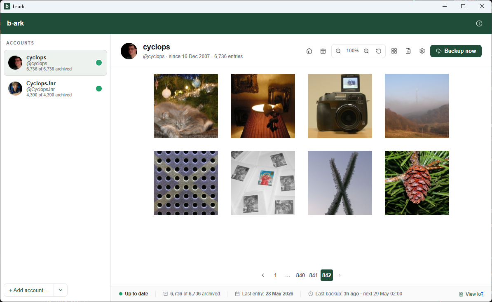

b-ark
Archive your blips on your own device (Windows).
Introduction
b-ark makes a local copy of every blip you've ever posted (images, text and metadata) on your own machine, automatically keeping it up to date. Browse offline, publish to the web, or hand over to AI tools to explore and create new formats.
- Backup. A local copy of every blip, updated automatically.
- View. Browse your archive offline in the built-in viewer.
- Publish. Copy the backup folder to any web host to publish.
- AI-ready.README.md for AI tools: Use AI to build photobooks, slideshows, statistics, custom sites.

Get b-ark
Contact us with feedback, suggestions and bugs.
Get in touch